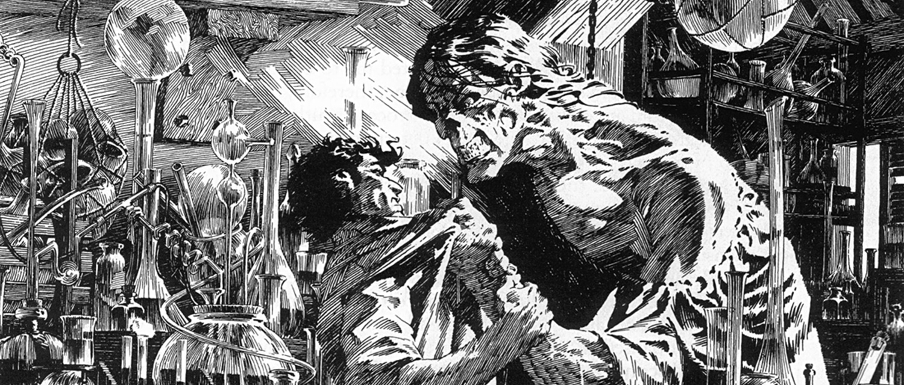

Научная фантастика
Научная фантастика (НФ)— жанр в литературе, кино и других видах искусства, одна из разновидностей фантастики. Научная фантастика основывается на фантастических допущениях (вымысле, спекуляции) в области науки, включая как точные, так и естественные и гуманитарные науки. Научная фантастика описывает вымышленные технологии и научные открытия, контакты с нечеловеческим разумом, возможное будущее или альтернативный ход истории, а также влияние этих допущений на человеческое общество и личность. Действие научной фантастики часто происходит в будущем, что роднит этот жанр с футурологией.
Определение жанра
Существует много споров среди критиков и литературоведов о том, что считать научной фантастикой. Тем не менее, большинство из них сходится на том, что научной фантастикой является литература, основанная на некоем допущении в области науки: появлении нового изобретения, открытии новых законов природы, иногда даже построении новых моделей общества (социальная фантастика).
В узком понимании, научная фантастика — о технологиях и научных открытиях, их захватывающих возможностях, их позитивном или негативном влиянии, о парадоксах, которые могут возникнуть. НФ в таком узком понимании будит научное воображение, заставляет думать о будущем и о возможностях науки. В более общем понимании, НФ — это фантастика без сказочного и мистического, в которой фантастические события и явления имеют не сверхъестественное, а научное объяснение.
Происхождение термина
Вопрос о происхождении аналогичного русского термина «научная фантастика» не совсем ясен. Иногда считается, что впервые он был использован в журнале «Природа и люди» в 1914 году, когда был опубликован рассказ Якова Перельмана «Завтрак в невесомой кухне» (дополнительная глава к роману Жюля Верна «Из пушки на Луну») с подзаголовком «Научно-фантастический рассказ Я. Перельмана». Однако до этого похожий термин — «фантастически научные путешествия» — в отношении Уэллса и других авторов употребил Александр Куприн в своей статье «Редиард Киплинг» (1908). По утверждению же профессора Корнеллского университета Аниндита Банерджи впервые термин «научная фантастика» появился в редакционной статье вышеупомянутого журнала «Природа и люди» ещё раньше — в одном из номеров за 1894 год — и, таким образом, возник независимо от Уэллса.
Русское название жанра, «научная фантастика», не является буквальным переводом английского словосочетания science fiction, хотя оба термина несут один смысл и обозначают одни и те же приёмы и произведения. Словосочетание «science fiction» буквально переводится с английского как «научный художественный вымысел» или «художественный вымысел о науке». Тем не менее, именно вариант «научная фантастика» прижился в русском языке. Пара fiction (художественный вымысел) — «фантастика» (без уточнения «научная», англ. speculative fiction) относится к «ложным друзьям переводчика». Во французском, немецком и ряде других европейских языков используется заимствованное английское название, а для «просто» фантастики используются слова, аналогичные русскому (фр. Fantastique, нем. Phantastik, исп. Fantástico).
Мнения
- Хьюго Гернсбек, который одним из первых начал использовать термин «science fiction», описывал его так: «Под научной фантастикой я понимаю литературу в духе Жюля Верна и Герберта Уэллса — романтические истории, переплетающиеся с научными фактами и пророческим видением».
- Писатель Кингсли Эмис определял научную фантастику как литературу, «описывающую ситуации, невозможные в известном нам мире, но гипотетически возможные на базе науки, технологии или псевдо-технологии, человеческого или инопланетного происхождения». По мнению Айзека Азимова, это «литература о влиянии научно-технического прогресса на человека».
- В 1970 году В. Ателинг-мл. писал об английском термине «Science fiction»: «Уэллс изначально использовал этот термин для обозначения того, что мы сегодня назвали бы „твёрдой“ научной фантастикой, в которой основанием для повествования выступает сознательное стремление опираться на уже известные (в момент написания) факты, и уж если в повествовании также встречалось некое чудо, то по крайней мере речь не должна была идти о целом арсенале чудес».
- «Г. Л. Олди» (коллективный псевдоним) условно делит научно-фантастические допущения на естественно-научные и гуманитарно-научные. К первым относится введение в произведение новых изобретений и законов природы, что характерно для твёрдой НФ. Ко вторым относится введение допущений в области социологии, истории, психологии, этики, религии и даже филологии. Таким образом создаются произведения социальной фантастики, утопии и антиутопии. При этом в одном произведении может сочетаться несколько видов допущений одновременно.
- Сергей Снегов в 1992 году в предисловии к своей книге «Люди как боги» писал: «Раз фантастика, значит, нечто выдуманное, нечто отличное от реальной действительности. А раз научная, то, стало быть, в чём-то соответствует законам развития и познания мира, выражает какую-то реальность природы и человека — хоть и выдуманное, но правдивое зеркало глубинной человеческой сущности».
- Как пишет в своей статье Мария Галина, «Традиционно считается, что научная фантастика (НФ) — это литература, сюжет которой разворачивается вокруг какой-то пусть фантастической, но всё-таки научной идеи. Точнее будет сказать, что в научной фантастике изначально заданная картина мира логична и внутренне непротиворечива. Сюжет в НФ обычно строится на одном или нескольких как бы научных допущениях (возможна машина времени, передвижение в космосе быстрее света, „надпространственные тоннели“, телепатия и прочее)».
Особенности
НФ и мифология
Существует мнение, что научная фантастика является разновидностью современной мифологии. О тесной связи научной фантастики с фольклором и мифологией писал А. Ф. Бритиков. Фантастика активно использует мифологию технической эры. Например, идея космического лифта имеет мифологические основы.
Даже такая фундаментальная мифолого-религиозная идея как всеобщее воскрешение умерших нашла своё отражение в научной фантастике: в цикле романов Филипа Фармера «Мир Реки» воскрешение всего человеческого рода осуществляют инопланетяне.
Мифология входит в состав научно-фантастических фильмов. Сложно переоценить роль в развитии фантастики связанных с научной мифологией рассказов о Големе и Франкенштейне. Идея робота впервые появилась в пьесе Карела Чапека R.U.R. и была воспринята в то время как чистая фантазия. Научные мифы основаны на достижениях науки, но их появление и развитие идёт успешнее и быстрее в научной фантастике (которую даже называют «экспериментальной лабораторией по созданию мифов»).
НФ и футурология
Зачастую действие НФ происходит в далёком будущем, что роднит НФ с футурологией, наукой прогнозирования мира будущего. Многие НФ-писатели посвящают своё творчество литературной футурологии, попыткам угадать и описать реальное будущее Земли, как это делали Артур Кларк, Станислав Лем и др. Другие писатели пользуются будущим лишь как сеттингом, позволяющим полнее раскрыть идею их произведения. И в том, и в другом случае фантастам нередко удаётся предсказать реальное развитие науки и техники. Многие авторы антиутопий и постапокалипсиса стремятся предупредить читателей об опасностях бездумного использования достижений прогресса и репрессивных форм государства и общества.
Однако фантастика о будущем и научная фантастика не совсем одно и то же. Действие многих научно-фантастических произведений происходит в условном настоящем («Великий Гусляр» К. Булычёва, большинство книг Ж. Верна, рассказы Г. Уэллса, Рэя Брэдбери) или даже прошлом (книги о путешествиях во времени). В то же время, в будущее иногда помещают действие произведений, не связанных с научной фантастикой. Например, действие многих произведений фэнтези происходит на Земле, изменившейся после ядерной войны: «Шаннара» Т. Брукса, «Пробуждение каменного бога» Ф. Х. Фармера, «Сос-верёвка» Пирса Энтони. Поэтому более надёжный критерий — не время действия, а область фантастического допущения.
История
Появление фантастики было вызвано промышленной революцией в XIX веке. Первоначально научная фантастика была жанром литературы, описывающим достижения науки и техники, перспективы их развития и т. д. Часто описывался — как правило, в виде утопии — мир будущего. Классическим примером такого типа фантастики являются произведения Жюля Верна и Герберта Уэллса.
В XX веке значительный вклад в развитие научной фантастики как жанра внесли американские писатели — представители наиболее технологически развитого государства. В работах всемирно известных авторов, таких как Рэй Брэдбери, Айзек Азимов, Роберт Хайнлайн поднимаются философские проблемы путей развития человечества, обсуждаются последствия внедрения технологий. Под влиянием работ американских авторов, а также в связи с широким распространением английского языка, и его превращением в общепринятый язык межкультурной коммуникации характерной особенностью второй половины XX века стало появление писателей фантастов, пишущих на английском языке, однако не являющихся носителями языка. Появились также специальные издания, в которых публикуются произведения зарубежных авторов, пишущих на английском языке.
Поздне́е развитие техники стало рассматриваться в негативном свете и привело к распространению антиутопических произведений. А в 1980-е годы начал набирать популярность поджанр киберпанк. В нём высокие технологии соседствуют с тотальным социальным контролем и властью всемогущих корпораций. В произведениях этого жанра основой сюжета выступает жизнь маргинальных борцов с олигархическим режимом, как правило, в условиях тотальной кибернетизации общества и социального упадка. Известный пример: «Нейромант» Уильяма Гибсона.
НФ в России и СССР
В России научная фантастика с XX века стала популярным и широко развитым жанром. Среди самых известных авторов — Александр Беляев, Иван Ефремов, братья Стругацкие, Кир Булычёв и другие.
Ещё в дореволюционной России отдельные научно-фантастические произведения писали такие авторы, как Фаддей Булгарин, В. Ф. Одоевский, Валерий Брюсов. К. Э. Циолковский несколько раз излагал свои воззрения на науку и технику в виде художественных рассказов. Но до революции НФ не была сложившимся жанром со своими постоянными писателями и поклонниками.
В СССР научная фантастика была одним из самых популярных жанров. Существовали семинары молодых фантастов, клубы любителей фантастики. Выходили альманахи с рассказами начинающих авторов — например, «Искатель», «Мир приключений». Фантастические произведения публиковались в научно-популярных журналах — таких как «Наука и жизнь», «Вокруг света», «Техника — молодёжи», «Знание — сила», «Химия и жизнь», «Юный техник», «Уральский следопыт».
В то же время, советская фантастика подвергалась жёстким цензурным ограничениям. От неё требовалось поддерживать позитивный взгляд на будущее, веру в коммунистическое развитие. Приветствовалась техническая достоверность, осуждалась мистика, сатира. В 1934 году на съезде Союза писателей Самуил Яковлевич Маршак определил жанру фантастики место в одном ряду с детской литературой.
Одним из первых в СССР научную фантастику начал писать Алексей Николаевич Толстой («Гиперболоид инженера Гарина», «Аэлита»). Экранизация романа Толстого «Аэлита» была первым советским фантастическим фильмом. В 1920—1930-е годы были опубликованы десятки книг Александра Беляева («Борьба в эфире», «Ариэль», «Человек-амфибия», «Голова профессора Доуэля» и др.), «альтернативно-географические» романы В. А. Обручева («Плутония» и «Земля Санникова»), сатирико-фантастические повести М. А. Булгакова («Собачье сердце», «Роковые яйца»). Их отличала техническая достоверность и интерес к науке и технике. Образцом для подражания у ранних советских фантастов был Герберт Уэллс, который сам был социалистом и несколько раз посещал СССР.
Советская фантастика пережила кризис в 1930-е и 1940-е годы, когда усилилось давление цензуры на писателей . В этот период преобладала «фантастика ближнего прицела» — твёрдая НФ, посвящённая популяризации науки и техники и рассматривающая лишь события ближайшего будущего. В 1950-е годы бурное развитие космонавтики приводит к расцвету фантастики об освоении Солнечной системы, подвигах космонавтов, колонизации планет. К ведущим авторам этого периода относятся Г. Гуревич, А. Казанцев, Г. Мартынов.
В 1960-е годы и позднее советская фантастика начинает уходить от твёрдых рамок научности, несмотря на давление цензуры. Многие произведения выдающихся фантастов позднесоветского периода относятся к социальной фантастике. В этот период появляются книги братьев Стругацких, Кира Булычёва, Ивана Ефремова, которые поднимают социальные и этические вопросы, содержат воззрения авторов на человечество и государство. Нередко фантастические произведения содержали скрытую сатиру. Эта же тенденция нашла отражение и в кинофантастике, в частности, в работах Андрея Тарковского («Солярис» и «Сталкер»). Параллельно с этим в позднем СССР снималось много приключенческой фантастики для детей, в которой часто содержался прогноз научно-технических достижений будущего, например, «Приключения Электроника», дилогия «Москва — Кассиопея» и «Отроки во Вселенной», «Тайна третьей планеты», «Гостья из будущего».
В современной России научная фантастика популярна и развита, хотя и уступает в популярности среди молодёжи фэнтези и другим модным жанрам. Ежегодно публикуются сотни новых наименований фантастических книг, нередко снимаются фантастические фильмы (такие как «Обитаемый остров», «Хардкор», «Притяжение», «Пришелец»). При этом, однако, подавляющая часть из них — сугубо развлекательные. В 2000-е и 2010-е выходили журналы и альманахи о фантастике: «Если», «Мир фантастики», «Полдень, XXI век»; появились крупные сайты о фантастике, такие как «Лаборатория фантастики», «Архивы Кубикуса» и, опять же, «Мир фантастики».
НФ в кино
Пионером кинофантастики был французский режиссёр Жорж Мельес, который в конце XIX — начале XX века снял ряд фантастических фильмов, в том числе знаменитое «Путешествие на Луну». Мельес, бывший циркач, создал первые спецэффекты, позволявшие изображать на экране невозможное в жизни. В дальнейшем развитие кинофантастики было неразрывно связано с реальным научно-техническим прогрессом, так как этот жанр сильно зависел от технологий, позволявших воплощать на экране фантастические образы — мир будущего, космос, инопланетян, роботов.
Большое развитие фантастика получила в немецком кинематографе 1920-х, в частности, антиутопический немой фильм «Метрополис» (1927) многими знатоками признаётся одним из лучших фантастических фильмов в истории. Однако подлинного расцвета фантастическое кино достигло в Голливуде, где фильмы в жанрах научной фантастики и родственных ей — ужасов, супергероики, фэнтези — были в числе самых популярных и прибыльных. Среди культовых фильмов середины XX века — «День, когда Земля остановилась» (1951), «Запретная планета» (1956) и «Планета обезьян» (1968), американо-британская «Космическая одиссея 2001 года» (1968) Стэнли Кубрика по сценарию Артура Кларка. Большое влияние на массовую культуру и развитие фантастики также имели телесериалы, особенно «Сумеречная зона», «Звёздный путь» (США), «Доктор Кто» (Британия).
Огромным прорывом для кинофантастики стало появление в конце 1970-х цифровых спецэффектов и компьютерной графики. В числе первых фильмов, применявших компьютерную графику, были «Звёздные войны» (1977) и «Трон» (1982), причём последний вывел эти технологии на новый уровень. Благодаря небывалому коммерческому успеху «Звёздных войн» и появлению новых технологий, кинофантастика с начала 1980-х переживает бум популярности, фантастические киноленты становятся блокбастерами. Создатели кинофантастики 1980-х и 1990-х, такие как Джеймс Кэмерон, Ридли Скотт, Пол Верховен, Вачовски, подобно современным им писателям, избрали более критический и пессимистический уклон, рисуя постапокалиптическое или антиутопическое будущее — примерами, в частности, могут служить киносерии «Терминатор», «Матрица», «Чужой».
Новым витком в развитии технологий кинофантастики стал фильм Джеймса Кэмерона «Аватар» (2009), который довёл до небывалых высот технологию 3D-кинематографа.
В мультипликации научная фантастика лучше всего представлена в работах японских аниматоров, таких как Кацухиро Отомо, Сёдзи Кавамори, Мамору Осии, Макото Синкай, Хидэаки Анно. Кинофантастика также хорошо представлена во Франции, к примеру, в работах мультипликатора Рене Лалу.

Разновидности
Научная фантастика за свою историю развилась и разрослась, породила новые направления и поглотила элементы более старых жанров, таких как утопия и альтернативная история. Научная фантастика делится, в основном, по области допущения: открытия и изобретения, ход истории, организация общества, путешествие во времени и др. Разумеется, деление на направления достаточно условно, так как одно и то же произведение может сочетать элементы сразу нескольких видов фантастики.
«Твёрдая» НФ
Старейший и первоначальный жанр научной фантастики. Его особенностью является жёсткое следование известным на момент написания произведения научным законам. В основе произведений твёрдой НФ лежит естественнонаучное допущение: например, научное открытие, изобретение, новинка науки или техники. До появления других видов НФ её называли просто «научной фантастикой». Термин hard science fiction впервые был использован в литературной рецензии P. Schuyler Miller, опубликованной в феврале 1957 года в журнале Astounding Science Fiction.
Классикой «твёрдой» НФ называют некоторые книги Жюля Верна («20 000 льё под водой», «Робур-завоеватель», «С Земли на Луну»), романы Артура Конана Дойля («Затерянный мир», «Отравленный пояс», «Маракотова бездна»), работы Герберта Уэллса, произведения Александра Беляева. Константин Циолковский, помимо своих научных работ, написал несколько научно-фантастических произведений: «На Луне» (1893) и «Вне Земли» (1918), а также участвовал в качестве консультанта при съёмках научно-фантастического фильма «Космический рейс».
Отличительной особенностью этих книг была детальная научно-техническая база, а в основе сюжета лежало, как правило, новое открытие или изобретение. Авторы «твёрдой» НФ совершили немало «предсказаний», правильно угадав дальнейшее развитие науки и техники. Так, Верн описывает вертолёт в романе «Робур-завоеватель», самолёт во «Властелине мира», космический полёт в «С Земли на Луну» и «Вокруг Луны». Уэллс предсказал видеосвязь, центральное отопление, лазер, атомное оружие. Беляев в 1920-е годы описал космическую станцию (в романе «Звезда КЭЦ»), радиоуправляемую технику.
«Твёрдая» НФ была особенно развита в СССР, где остальные жанры фантастики не приветствовались цензурой. Особо распространена была «фантастика ближнего прицела», рассказывающая о событиях предполагаемого недалёкого будущего — в первую очередь, колонизации планет Солнечной системы. К наиболее известным образцам фантастики «ближнего прицела» относятся книги Г. Гуревича, Г. Мартынова, А. Казанцева, ранние книги братьев Стругацких («Страна багровых туч», «Стажёры»). Они рассказывали о героических экспедициях космонавтов на Луну, Венеру, Марс; в пояс астероидов. В этих книгах техническая достоверность в описании космических полётов сочеталась с наивными представлениями об обитаемости соседних планет — тогда ещё сохранялась надежда найти на них жизнь.
Хотя основные произведения «твёрдой» НФ были написаны в XIX и первой половине XX века, многие авторы обращались к этому жанру и во второй половине XX века. Например, Артур Кларк в своей серии книг «Космическая одиссея» опирался на строго научный подход и описал развитие космонавтики, очень близкое к реальному.
В последние годы, по мнению Эдуарда Геворкяна, жанр переживает «второе дыхание». Примером может служить учёный-астрофизик Аластер Рейнольдс, который удачно сочетает твёрдую научную фантастику с космооперой и киберпанком (так, например, все космические корабли у него досветовые). Отнесение того или иного произведения к твёрдой научной фантастике часто служит предметом споров
Социальная фантастика
Герберт Уэллс в автобиографии, подводя итог своему творчеству, называл фантастику своего рода умозрительной социологией: «Социология не может быть ни просто искусством, ни наукой в узком смысле этого слова, она собрание знаний, представляемых в вымышленной форме с присутствием личного элемента, иначе говоря, литература в наиболее возвышенном смысле этого понятия». В соответствии с этим он рассматривал «создание и критику утопий» как такую литературную форму, в которую лучше всего мог быть облачён «хороший социологический труд».
Это мнение разделял Айзек Азимов, который в своей статье «Социальная научная фантастика» сравнивал изображение возможного будущего и иных форм общественного устройства со своего рода «социальным экспериментом на бумаге». Приучать читателя к возможности изменений, заставлять его размышлять вдоль разнообразных направлений — в этом он усматривал «великую служебную роль научной фантастики». Научная фантастика, по убеждению Азимова, призвана систематически исследовать возможные пути общественного развития, своевременно предостерегать об опасных тенденциях и самое главное — сделать рациональное размышление о судьбах человечества достоянием возможно более широких масс.
Хронофантастика
Хронофантастика, темпоральная фантастика, или хроноопера — жанр, рассказывающий о путешествиях во времени. Ключевым произведением этого поджанра считается «Машина Времени» Уэллса. Хотя о путешествиях во времени писали и раньше (например, «Янки из Коннектикута при дворе короля Артура» Марка Твена), именно в «Машине Времени» перемещение во времени впервые было намеренным и научно обоснованным, и таким образом этот сюжетный ход был введён конкретно в научную фантастику.
В XX веке идея путешествия во времени, и даже туризма, получила развитие. Фантасты посвятили много произведений анализу временных парадоксов, которые могут быть вызваны путешествием в прошлое или возвращением из будущего в настоящее. Эта тема, например, поднимается в знаменитом рассказе Рэя Брэдбери «И грянул гром». Кир Булычёв использовал путешествие во времени в десятках своих книг, в том числе в цикле об Алисе.
Хронофантастика часто соединяется с альтернативной историей, Один из самых популярных сюжетов в хронофантастике — герой из настоящего, попавший в прошлое, изменяет ход истории. «Янки…» Твена послужил источником вдохновения для множества подобных книг. Самые известные «попаданческие» произведения:
- «Меж 2-х времён» Джека Финнея,
- «Фантастическая сага» и «Восстание во времени» Гарри Гаррисона,
- «Да не опустится тьма» Л. Спрэг де Кампа.
Также часто встречаются книги о параллельных мирах, образовавшихся из-за различного развития во времени, и людях, путешествующих между ними или даже контролирующих их развитие. Такая идея лежит в основе произведений:
- «Три сердца и три льва» и цикл «Патруль времени» Пола Андерсона,
- «Перекрёстки времени» Андре Нортон,
- «Конец Вечности» Айзека Азимова,
- «Черновик» и «Чистовик» Лукьяненко,
- телесериал «Доктор Кто».
Из-за злоупотребления этими приёмами в развлекательной фантастике, жанр получил[источник не указан 875 дней] также прозвище «хроноопера» (по аналогии с «космооперой», см. ниже). Заезженная тема обрела второе дыхание в пародиях и иронической фантастике. Классические примеры:
- кинотрилогия «Назад в будущее»,
- фильм «Иван Васильевич меняет профессию»,
- фрагмент повести Стругацких «Понедельник начинается в субботу».
Альтернативно-историческая
Произведения, в которых развивается идея того, что в прошлом произошло или не произошло какое-либо событие, и что могло бы из этого выйти.
Первые образцы такого рода допущений встречаются ещё задолго до появления научной фантастики. Далеко не все они представляли собой художественные произведения — иногда это были серьёзные труды историков. Например, историк Тит Ливий рассуждал, что было бы, пойди Александр Македонский войной на его родной Рим. Знаменитый историк сэр Арнольд Тойнби также посвятил Македонскому несколько своих эссе: что было бы, если бы Александр прожил дольше, и наоборот, если бы его не было вообще. Сэр Джон Сквайр выпустил целую книгу исторических эссе, под общим заглавием «Если бы всё вышло не так».
В XIX веке к альтернативной истории стали прибегать авторы патриотических утопий, чтобы «переписать историю» в свою пользу. Француз Луи Жоффруа описал мир, в котором Наполеон победил всех своих противников, англичанин Натаниэль Хоуторн «оставил в живых» своих соотечественников Байрона и Китса, американец Кастелло Холфорд придумал американскую утопию, в которой колонисты находят золото на побережье Вирджинии. Как и многое другое, альтернативную историю в научную фантастику ввёл Герберт Уэллс. В своей книге «Люди как боги» Уэллс соединил хронофантастику, альтернативную историю и патриотическую утопию: он ввёл идею множества параллельных миров, ветвящихся от ключевых точек в истории и развивающихся каждый сам по себе. В одном из них обнаруживается утопическая, процветающая Англия.
Самые популярные «ключевые точки» в альтернативной истории — это величайшие битвы и войны. Особенно часто описывается победа Германии во Второй Мировой войне — как правило, в виде антиутопии-предупреждения (Филип К. Дик — «Человек в высоком замке», многие книги Гарри Тёртлдава, и др.). Часто «переписывают» итоги гражданской войны в США (особенно Гёттисбергской битвы), революции и гражданской войны в России, битвы при Гастингсе, Наполеоновских войн. При этом многие авторы в угоду патриотическим настроениям переписывают историю «в свою пользу». Отмечают, что в нынешней российской фантастике публикуется множество альтернативных историй и хроноопер, где история России переписана в патриотическом духе, в соответствии с убеждениями автора (например, монархическими или социалистическими).
Отдельно стоит отметить такие виды альтернативной истории, как альтернативная география и криптоистория. Альтернативная география исходит из допущения, что география Земли отличается от известной нам, и с этим связаны перемены в истории. Классический образец — роман В. Аксёнова «Остров Крым»: в нём Крым оказывается островом, Фрунзе не может штурмовать Перекоп и барон Врангель создаёт в Крыму независимое государство. Криптоистория же «изменяет» не настоящее и будущее, а прошлое. Она основана на допущении, что реальная история отличается от известной нам, но была забыта, скрыта или сфальсифицирована. Андрей Валентинов является автором ряда таких книг, например в его цикле «Око силы» за всеми значимыми событиями в истории Земли стоят инопланетные «кукловоды».
Альтернативная история давно вышла за пределы литературы. В кинематографе и на телевидении известны, например, художественные фильмы «Красный рассвет», «Филадельфийский эксперимент II», «Родина» («Фатерлянд»), телесериал «Скользящие», постановочно-документальный сериал «Альтернативная история» (с эпизодами России/СССР разных эпох), псевдо-документальные фильмы «Первые на Луне» и «Аполлон 18» (оба — криптоистория о полёте советских космонавтов на Луну), «КША: Конфедеративные Штаты Америки», мультсериал Zipang и другие фильмы и телесериалы о альтернативной истории. Компьютерные игры Red Alert (войны с нацизмом не было, и холодная война переросла в горячую), TimeShift, Resistance: Fall of Man (войны с нацизмом не было и на землю напали инопланетяне), World in Conflict (из-за мирового кризиса СССР пришлось напасть на США), Fallout (мир где Китай стал сверхдержавой и начал войну за ресурсы с США, впоследствии война закончилась взаимным обменом ядерными ударами) и другие основаны на альтернативной истории Холодной войны, по сюжету переросшей в настоящую войну между Россией и США.
Апокалиптическая и постапокалиптическая фантастика
Тесно связанные жанры, действие произведений в которых происходит во время или вскоре после катастрофы планетарного масштаба (столкновения с метеоритом, ядерной войны, экологической катастрофы, эпидемии).
Одним из первых образцов современного постапокалипсиса был роман Мэри Шелли «Последний человек», в котором человечество гибнет от страшной эпидемии. Джек Лондон написал повесть «Алая чума» на ту же тему.
Однако настоящий размах постапокалиптика получила в эпоху Холодной войны, когда над человечеством нависла реальная угроза ядерной войны. В этот период создаются такие произведения, как:
- «Песнь о Лейбовице» В. Миллера,
- «Dr. Bloodmoney» Ф. Дика,
- «Ужин во Дворце Извращений» Тима Пауэрса,
- «Пикник на обочине» Стругацких,
- «Мальвиль» Робера Мерля.
Произведения в этом жанре продолжают создаваться и после окончания Холодной войны (например, «Метро 2033» Д. Глуховского).
Постапокалипсис особенно популярен в кино («Сталкер» А. Тарковского, серии фильмов «Безумный Макс» и «Планета обезьян»), компьютерных играх (Fallout, S.T.A.L.K.E.R.), комиксах. В этих произведениях рисуется человечество, отброшенное катастрофой назад в развитии, вынужденное выживать в условиях высокой радиации, борьбы с мутантами или с тоталитарным правительством, нехватки продовольствия и энергии. В книге П. Буля «Планета обезьян» и её экранизациях показана Земля, на которой обезьяны развились в новый разумный вид и вытеснили людей. Другая распространённая тема в постапокалипсисе — глобальная война людей с другим видом, гибель цивилизации в результате восстания машин (киносерии «Терминатор» и «Матрица») или вторжения инопланетян («Обливион», «Поле битвы: Земля»).
Постапокалипсис и антиутопия часто пересекаются. Так, в романе «451 градус по Фаренгейту» Рэй Брэдбери происходит атомная война. Во многих книгах и фильмах в жанре антиутопии тоталитаризм складывается как «защитная реакция» общества после ужасной катастрофы («В значит Вендетта», «Эквилибриум», ремейк «Вспомнить всё»). Произведения о восстании машин часто пересекаются с киберпанком — примером может служить «Матрица». Часты пересечения и с альтернативной историей: в серии Гарри Тертлдава «Мировая война», ядерное оружие применяется уже в 1943 году. В романе «День триффидов» Джон Уиндем соединил литературу ужасов и постапокалипсис, Стивен Кинг в «Тёмной башне» — постапокалипсис и фэнтези.
Утопии и антиутопии
Утопии и антиутопии — жанры, посвящённые моделированию общественного устройства. В утопиях рисуется идеальное общество, выражающее воззрения автора. В антиутопиях — полная противоположность идеалу: ужасное, обычно тоталитарное, общественное устройство.
Жанр утопии значительно старше жанра научной фантастики, и слился с ним лишь в последнее столетие. Начало жанра было положено ещё трудами античных философов, посвящённых созданию идеального государства. Название жанра происходит от одноимённого произведения Томаса Мора.
В XIX—XX веке в научной фантастике начали появляться образы будущего социального устройства Земли — как идеальные, с точки зрения авторов, так и отталкивающие, призванные предупредить несимпатичные авторам общественные тенденции. Первой научно-фантастической антиутопией называют «Когда спящий проснётся» Г. Уэллса (1897).
Бурные события XX века, череда мировых войн и революций, установление диктатур, породили целый ряд произведений в обоих жанрах. Ключевые антиутопии XX века:
- «Мы» Е. Замятина;
- «1984» Джорджа Оруэлла;
- «О, дивный новый мир» и «Остров» Олдоса Хаксли;
- «451 градус по Фаренгейту» Рэя Брэдбери.
Жанр утопии в XX веке оказался менее востребован, среди немногих образцов — «Люди как боги» всё того же Уэллса.
В СССР многие авторы обращались к коммунистической утопии, рисуя идеальное коммунистическое общество будущего. Такими, например, являются романы:
- «Туманность Андромеды» И. Ефремова,
- «Незнайка в Солнечном городе» Н. Носова,
- «Полдень, XXII век» братьев Стругацких,
- «Девушка у обрыва» Вадима Шефнера.
В кинематографе антиутопия началась с классического немого фильма 1927 года «Метрополис», в котором присутствовали все основные элементы антиутопии: технологически развитое, тоталитарное, разделённое на касты общество и борющийся за его изменение герой. Другие ключевые антиутопии: «Заводной апельсин» (по одноимённому роману Бёрджеса), «Гаттака», «Эквилибриум», «V — значит вендетта» (по одноимённому комиксу Алана Мура). Сложилась даже разновидность развлекательных антиутопий, в которых типичный сеттинг антиутопии служит как фон для приключений героев: «Бегство Логана», «Судья Дредд», «Эон Флакс», «Ультрафиолет». Фильмы в жанре утопии встречаются реже. К ним относят, например, экранизацию «Туманности Андромеды» и других утопий.
Космическая опера
«Космической оперой» окрестили развлекательную приключенческую НФ, публиковавшуюся в популярных в 1920-50-х в США pulp-журналах. Название было дано в 1940 г. Уилсоном Такером и, поначалу, было презрительным эпитетом (по аналогии с «мыльной оперой»). Однако со временем термин прижился и перестал носить негативный оттенок.
Действие «космоопер» происходит в космосе и на других планетах (т. н. «планетарная фантастика»), обычно в условном «будущем». В основе сюжета лежат приключения героев, а масштабы происходящих событий ограничены лишь фантазией авторов. Изначально произведения этого жанра были чисто развлекательными, но впоследствии приёмы «космической оперы» вошли и в арсенал авторов художественно значительной фантастики.
Классиками космооперы были:
- Эдгар Берроуз с циклом о приключениях Джона Картера на Марсе,
- Эдмонд Гамильтон («Звёздные короли», «Звёздный волк»),
- Мюррей Лейнстер,
- Э. Э. «Док» Смит («Ленсмены»).
Они публиковались в знаменитых pulp-журналах Weird Tales, Amazing Stories, Wonder Stories, Astounding Science Fiction. Тогда же появились первые многоавторские сериалы книг и комиксов — «Бак Роджерс», «Флэш Гордон» и др. К 1950-м из-за высокой коммерциализации и штамповости в жанре космооперы наступил кризис, его популярность упала. Возродить её сумел кинематограф, в первую очередь серией фильмов «Звёздные войны», а также телесериалами «Звёздный путь» и «Звёздный крейсер „Галактика“». В жанре космической оперы прославились также такие фантасты, как Андре Нортон (цикл «Королева солнца»), Гарри Гаррисон (цикл «Стальная крыса»).
Особо популярная категория космооперы — военно-космическая фантастика, посвящённая крупномасштабным войнам цивилизаций в космосе, а иногда и дипломатическим и шпионским интригам. Характерные образцы такой литературы:
- «Хонор Харрингтон» Д. Вебера,
- «Барраяр» Л. Буджолд,
- «Завтра война» А. Зорича.
Среди примеров в других сферах — телесериалы «Вавилон-5», «Макросс», компьютерные игры Starcraft, Master of Orion, Freespace, Mass Effect, Космические рейнджеры, игры по вселенной Star Wars, вселенная настольной игры Warhammer 40000. Поджанр планетарной фантастики представлен такими фильмами, как «Аватар», «Джон Картер», серия фильмов «Чужой».
Хотя космическая опера в целом считается развлекательным жанром, её приёмы используются и авторами более «серьёзных» направлений НФ. Так, социальную фантастику с космооперой сочетают:
- «Дюна» Ф. Херберта,
- «Обитаемый остров» братьев Стругацких,
- «Звёздный десант» Р. Хайнлайна,
- «Игра Эндера» О. С. Карда,
- «Гиперион» Д. Симмонса.
Нередки смешения космической фантастики и киберпанка. Подобное сочетание характерно для творчества Брюса Стерлинга, Юкито Кисиро, Аластера Рейнольдса и Андрея Ливадного.
Киберпанк
Жанр, рассматривающий эволюцию общества под воздействием новых технологий, особое место среди которых уделено телекоммуникационным, компьютерным, биологическим, и, не в последнюю очередь, социальным. Фоном в произведениях жанра нередко выступают киборги, андроиды, суперкомпьютер, служащие технократичным, коррумпированным и аморальным организациям/режимам. Название «киберпанк» придумал писатель Брюс Бетке, а литературный критик Гарднер Дозуа подхватил его и стал использовать как название нового жанра. Он кратко и ёмко определил киберпанк как «Высокие технологии и жалкая жизнь» («High tech, low life»).
Классиками и отцами-основателями киберпанка называют Уильяма Гибсона («Нейромант», 1984) и Брюса Стерлинга («Схизматрица», 1985), а также Филипа К. Дика, который в некоторых своих книгах — «Мечтают ли андроиды об электроовцах?», «Из глубин памяти», и других — предвосхитил киберпанк ещё в 1960-70-е. К первой волне киберпанка относятся также Пэт Кадиган, Руди Рюкер и Джон Ширли. В 90-е жанр разросся и приобрёл популярность. В это время появились молодые авторы, такие как Тэд Уильямс (цикл «Иноземье»), Пол ди Филиппо («Рибофанк»), Нил Стивенсон. Однако реальное развитие высоких технологий уже начало обгонять фантазию авторов, поэтому киберпанк в его изначальном виде постепенно растворился в стилевых экспериментах и смешениях с другими жанрами — так называемом посткиберпанке. В частности, введение в киберпанк тем нанотехнологий и биоинженерии привело к возникновению таких экзотических поджанров, как нанопанк и биопанк, а литературные эксперименты с темами киберпанка в антураже XIX века, где роль новых, меняющих общество технологий выполняют не компьютеры, а паровые машины и сложные механические устройства, породили новый, самостоятельный жанр научной фантастики — стимпанк.
Киберпанк широко представлен в кинематографе, хотя многие картины балансируют на грани киберпанка и других видов фантастики. Это, например, многочисленные экранизации книг Ф. К. Дика: «Бегущий по лезвию», «Вспомнить всё» и его ремейк, «Особое мнение». «Джонни-мнемоник» является экранизацией одноимённой книги Гибсона, а «Газонокосильщик» можно назвать неавторизованной экранизацией романа Дэниела Киза «Цветы для Элджернона», перенесённой в жанр киберпанка. По оригинальным сюжетам поставлены фильмы «Нирвана», «Элизиум» и кинотрилогия «Робокоп». Самым успешным кинопроизведением в этом жанре остаётся трилогия «Матрица» братьев Вачовски, имеющая также черты постапокалипсиса. В ней вводится принципиально новый для киберпанка сюжетный ход: вся жизнь в XXI веке на самом деле виртуальная реальность, продукт иллюзий для нашего мозга. В мультипликации создан целый ряд фильмов и телесериалов в жанре киберпанк, в основном в Японии : «Призрак в доспехах», «Эрго Прокси», «Эксперименты Лэйн» и др.
В духе киберпанка выдержаны и многие видеоигры, в частности, серия Deus Ex, Код доступа: РАЙ (продолжения Власть закона и HTPD: Власть закона), Syndicate, System Shock и др.
Киберпанк часто пересекается с другими видами НФ, особенно с антиутопией. Почти в любом произведении киберпанка есть оттенок капиталистической антиутопии: продажные СМИ, всесильные корпорации, тотальный контроль. Это особенно характерно для книг Ф. К. Дика и их экранизаций. Постапокалипсис сочетается с киберпанком в фильмах «Искусственный разум», «Эрго Прокси», «Сны Оружия», кинотрилогии «Матрица», новой версии «Вспомнить всё».
Стимпанк
Жанр, созданный в подражание таким классикам фантастики как Жюль Верн и Альбер Робида. Также может быть отнесён к альтернативной истории, так как упор делается на альтернативных направлениях развития науки и техники: например, совершенствованию паровых двигателей и сложной механики вместо двигателя внутреннего сгорания и электроники.
Стимпанк сформировался из очень разрозненных произведений, объединённых описанной техникой и антуражем, и получил признание как жанр в конце XX века. Однозначного мнения об основателях жанра нет, к ранним образцам стимпанка иногда относят трилогию «Кочевники времени» Майкла Муркока, «Ночь Морлоков» Кевина У. Джетера, «Машина различий» Гибсона и Стерлинга. Среди современных авторов стимпанка — Чайна Мьевиль («Нью-Корбюзон»), Скотт Вестерфельд («Левиафан»), Вадим Панов («Герметикон»).
Хотя корни стимпанка в твёрдой научной фантастике, элементы его стали популярны и в фэнтези, где сформировался свой, фэнтезийный стимпанк — разновидность технофэнтези (см. ниже), сочетающая технологии XIX-начала XX века с магией и фольклорными существами. Примеры фэнтезийного стимпанка — вселенная Warhammer Fantasy, игры Arcanum, Myst, Thief, Сибирь.
Хотя корни стимпанка в твёрдой научной фантастике, элементы его стали популярны и в фэнтези, где сформировался свой, фэнтезийный стимпанк — разновидность технофэнтези (см. ниже), сочетающая технологии XIX-начала XX века с магией и фольклорными существами. Примеры фэнтезийного стимпанка — вселенная Warhammer Fantasy, игры Arcanum, Myst, Thief, Сибирь.
Хотя корни стимпанка в твёрдой научной фантастике, элементы его стали популярны и в фэнтези, где сформировался свой, фэнтезийный стимпанк — разновидность технофэнтези (см. ниже), сочетающая технологии XIX-начала XX века с магией и фольклорными существами. Примеры фэнтезийного стимпанка — вселенная Warhammer Fantasy, игры Arcanum, Myst, Thief, Сибирь.
Научное фэнтези и технофэнтези
Научное фэнтези (англ. Science fantasy) — гибридное направление, созданное на стыке научной фантастики и фэнтези. Иногда в научной фантастике применяется и мифология фэнтези (Роджер Желязны «Князь света», Дэн Симмонс «Илион»). Близким к направлению научного фэнтези является технофэнтези, в которой идёт сосуществование или соединение науки и магии, например, «Лиловый шар» Кира Булычёва и «Джек из Теней» Роджера Желязны.
Факты
Космический зонд «Феникс», запущенный с Земли в августе 2007 года и совершивший в мае 2008 посадку на Марс в районе его северного полюса, привёз на планету цифровую библиотеку научной фантастики[69].